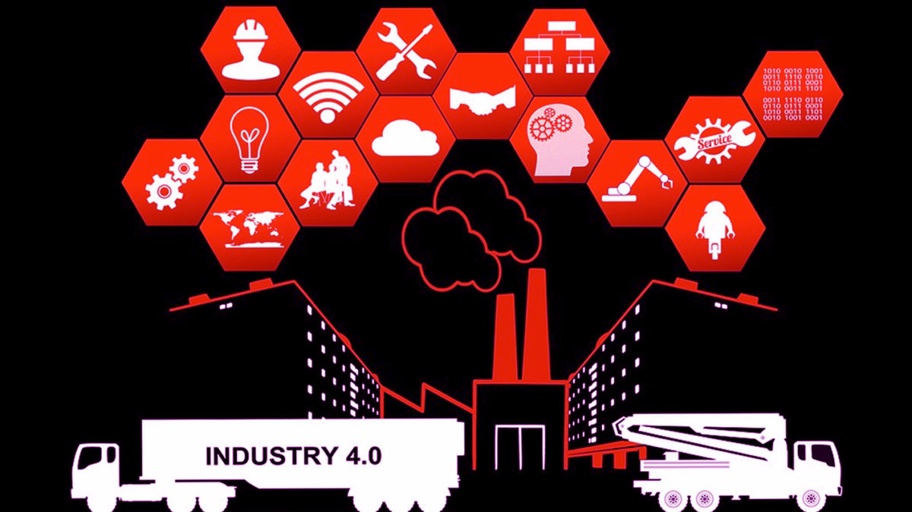

Explorando la Ingeniería del Futuro
Este proyecto analiza el impacto de la automatización industrial y las herramientas digitales en la sociedad actual.
Este proyecto analiza el impacto de la automatización industrial y las herramientas digitales en la sociedad actual.
Pilares Tecnológicos
- Automatización de procesos industriales.
- Sistemas de gestión de datos eficientes.
- Integración de herramientas digitales educativas.
Galería de Proyectos

Recursos y Referencias
Para conocer más sobre los estándares de desarrollo web, puedes visitar el sitio oficial del Para conocer mas acerca de los pilares tecnologicos.